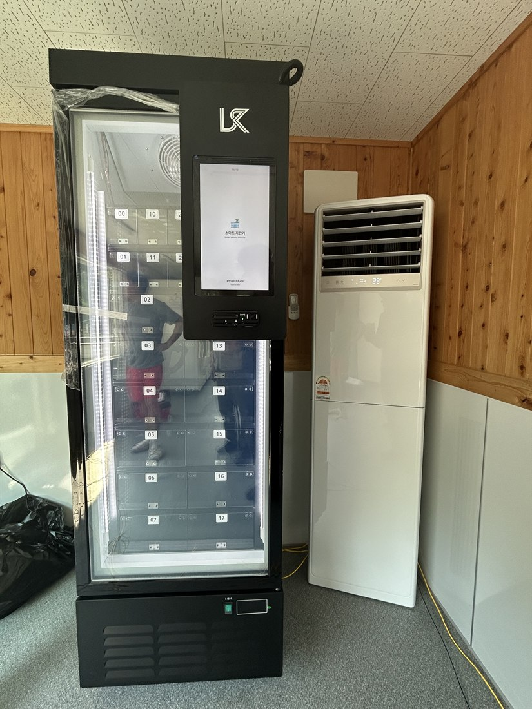
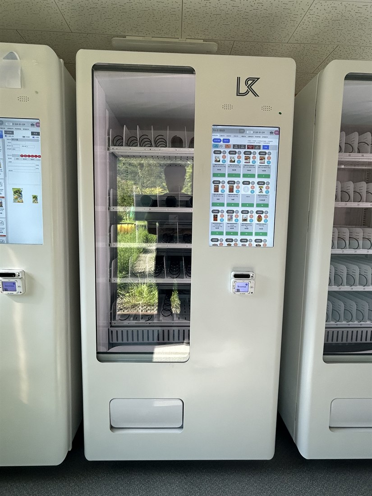

캠핑장 무인자판기 설치 완전정리 — 주류·고기·과자 자동판매기

캠핑장은 무인자판기가 가장 잘 되는 장소 중 하나입니다. 대부분 외진 곳에 있어 근처에 편의점이 없고, 밤이 되면 손님들이 술·고기·간식·얼음을 찾는데 사러 나갈 곳이 마땅치 않기 때문입니다. 그래서 캠핑장 안에 주류·고기·과자 자동판매기를 두면, 그 수요가 그대로 매출이 됩니다. 이 글은 캠핑장 무인자판기 설치를 어떻게 알아봐야 하는지와, 설치했을 때 좋은 점을 정리한 것입니다.
1. 캠핑장 자판기 종류 — 뭘 팔 수 있나
캠핑장은 파는 품목이 편의점만큼 다양합니다. 요즘 스마트 자판기는 화면에서 고르고 카드로 결제하는 방식이라, 한 대에 여러 품목을 담을 수 있습니다.
• 주류 자판기 — 맥주·소주 등. 성인인증(신분증·모바일 인증) 기능이 있는 기종이어야 합니다.
• 냉장 음료 자판기 — 생수·이온음료·탄산·커피.
• 고기·냉동 자판기(쇼케이스) — 삼겹살·목살 등 고기, 냉동식품·밀키트를 냉동 쇼케이스로.
• 과자·스낵 자판기 — 과자·라면·간식.
• 얼음 자판기 — 여름 캠핑 필수.
• 캠핑 소모품 — 부탄가스·번개탄·장작·일회용품까지 자판기로 파는 곳도 많습니다.

2. 캠핑장에 자판기를 설치하면 좋은 점
① 편의점이 없는 위치라 경쟁 없이 수요를 독점합니다.
② 24시간 무인 판매 — 밤늦게 술·고기·간식이 팔립니다. 캠핑은 저녁·밤 소비가 큽니다.
③ 인건비 0원 — 관리자 없이 운영되고, 매출·재고는 원격으로 확인합니다.
④ 손님 만족·재방문 — "여긴 다 있어서 편하다"는 인상이 재방문으로 이어집니다.
⑤ 부가 매출 — 사이트 이용료 외에 자판기 매출이 그대로 순수입이 됩니다.
⑥ 글램핑·카라반·오토캠핑장처럼 체류가 긴 곳일수록 회전이 좋습니다.
3. 주류 자판기는 성인인증이 필수
캠핑장에서 술이 잘 팔린다고 아무 자판기로 주류를 팔면 안 됩니다. 성인인증(신분증 스캔·모바일 인증)을 거치는 성인인증 주류 자판기여야 합법입니다. 인증 없는 무인 주류 판매는 문제가 되니, 설치 전에 성인인증 지원 여부를 반드시 확인하세요.

4. 캠핑장 자판기, 이렇게 알아보세요
설치업체를 고를 때 아래를 확인하면 실패가 적습니다.
① 설치비·기기 비용 — 설치비가 무료인지, 구입·렌탈·임대 중 뭐가 유리한지.
② 결제 — 카드·삼성페이·카카오페이·네이버페이·QR을 다 받는지(캠핑객은 현금을 잘 안 씁니다).
③ 냉장·냉동 옵션 — 음료 냉장, 고기·냉동식품용 냉동 쇼케이스가 되는지.
④ 성인인증 — 주류를 팔려면 필수.
⑤ 원격 관리 — 재고·매출·온도를 원격으로 보는지(캠핑장은 자주 못 가니 중요).
⑥ A/S·통신 — 외진 곳이라 통신·고장 대응이 빠른지.
⑦ 입지·품목 컨설팅 — 우리 캠핑장 손님에 맞는 품목을 잡아 주는지.
5. 캠핑장 자판기, 이렇게 시작하세요
H포스는 설치비 무료로 캠핑장·글램핑·오토캠핑장에 맞춰 주류(성인인증)·고기(냉동 쇼케이스)·음료·과자 자판기를 구성해 드립니다. 카드·간편결제 연동, 원격 재고관리, 냉장·냉동 옵션까지 한 번에 세팅하고, 외진 위치도 반입·통신·A/S를 챙깁니다. 구입·구매도, 부담되면 임대·렌탈로도 시작할 수 있습니다.
사장님 캠핑장 위치와 손님 유형(가족·글램핑·백패킹 등)만 알려주시면, 어떤 품목을 담아야 잘 팔리는지까지 무료로 상담해 드립니다.
📞 캠핑장 무인자판기 설치 상담 010-6832-1994